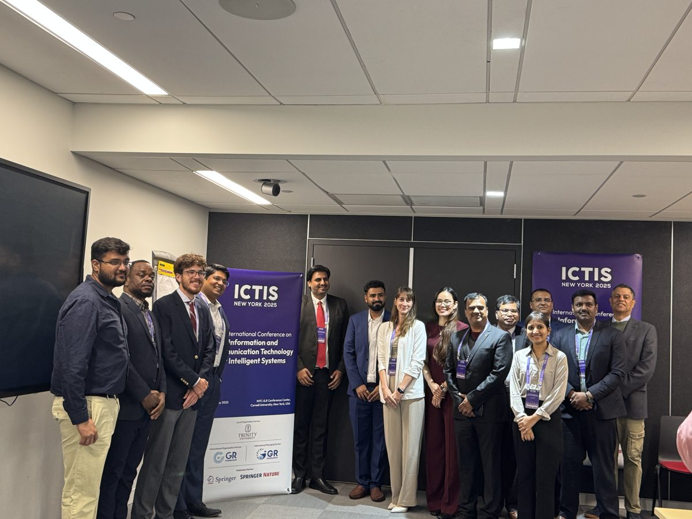
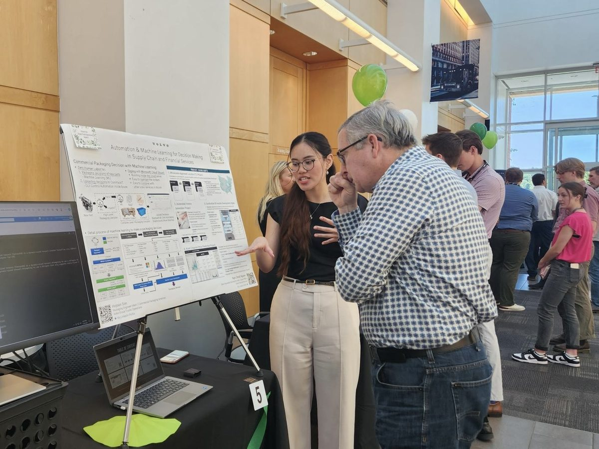
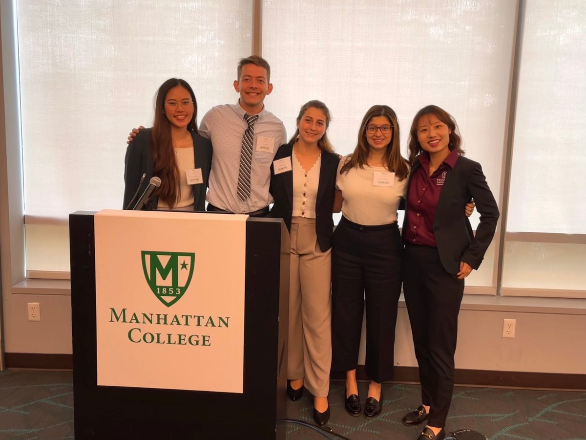
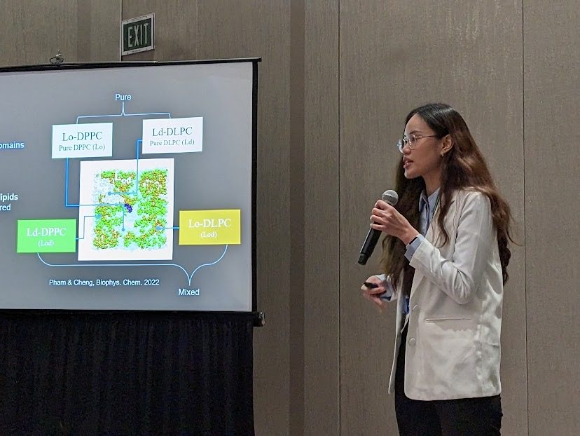
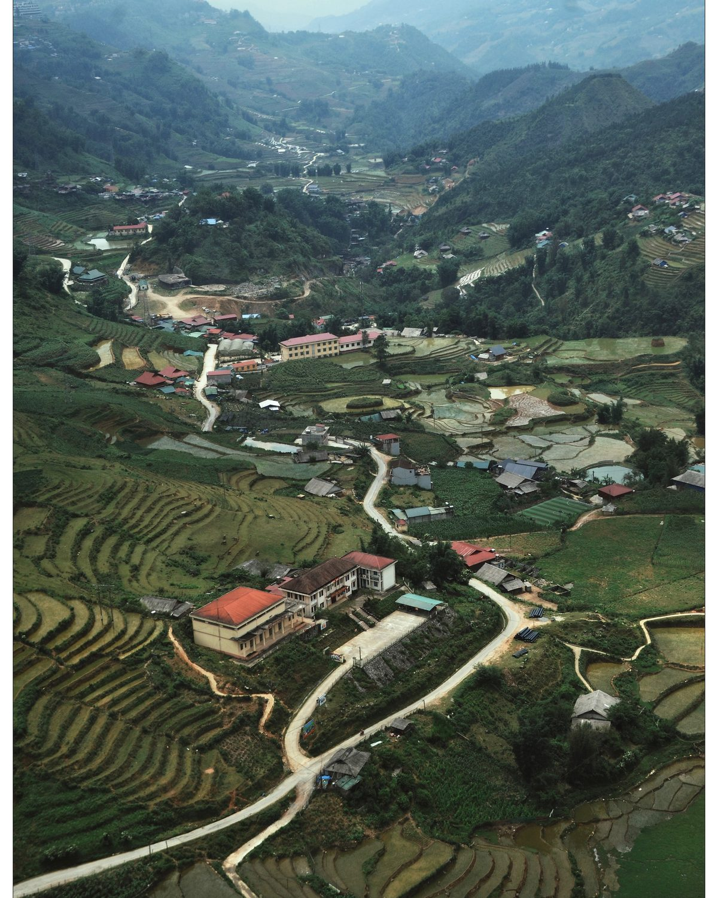
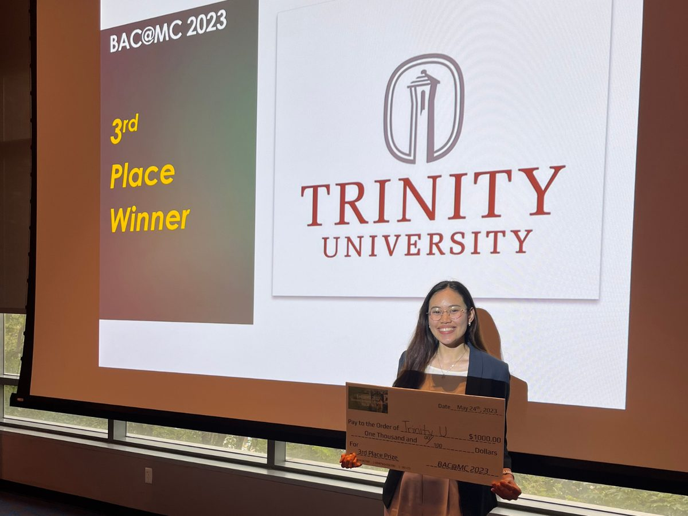
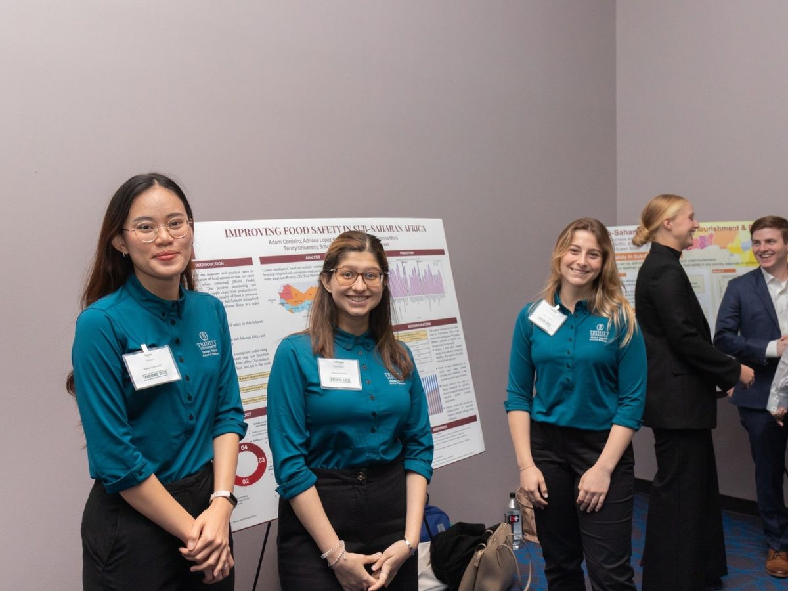
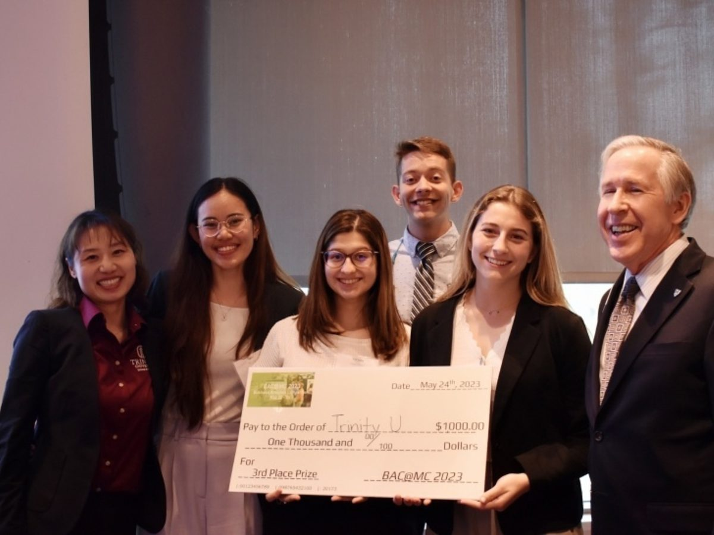
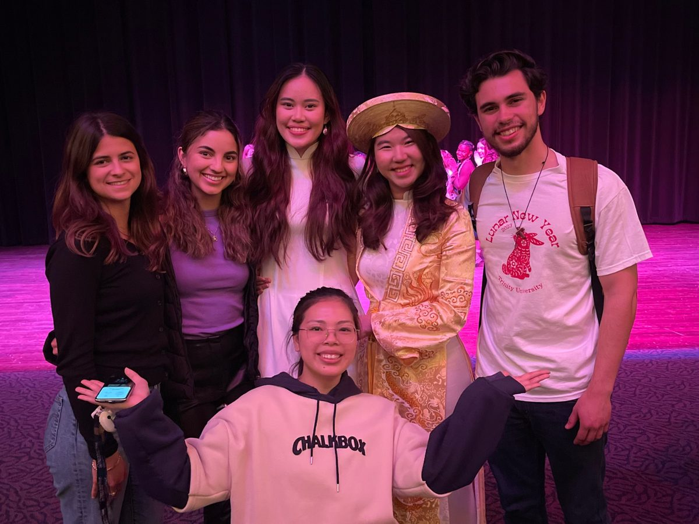
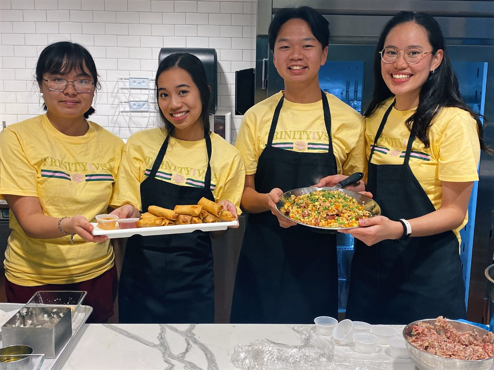

Hi, I'm Nora (Ngoc) Nguyen, a Project Manager at Applied Materials, a semiconductor equipment and services
company. I work on workflow automation, business intelligence, and
supply-chain process improvement. In Global Services, I run programs that streamline
reverse value chain operations, modernize legacy workflows, and give leaders better information to decide with.
Most of my work starts with an unclear business need and ends with something a team can rely on: a
multi-team workflow, a dashboard that answers the questions leaders actually ask, or an automation that
removes a bottleneck.
Before this role, I built my foundation in data analytics, machine learning,
and software development across the automotive, SaaS, and biomedical fields at Volvo Group,
CDK Global, and Trinity University's Neuroscience Lab. That background shapes how I approach process
improvement today: analytical rigor, operational detail, and design that starts from the people who will use it.

ICTIS 2025, Cornell University NYC-ILR Conference Center, New York, NY

Volvo Group, Greensboro, NC, 2024

Business Analytics Competition 2023, Manhattan College, New York, NY

APS Conference 2023, Las Vegas, NV
Outside of work
I like experimenting with my camera when I'm traveling or out in nature. I'm far from a professional and do
it purely for fun, but capturing landscapes and small moments helps me hold on to the feeling of a place.

Terrace fields, Sapa, VietnamAlpine lake, Rocky Mountain National Park, COShanghai skyline from the Bund, ChinaSunset by the sea, South Korea
Program Manager leading workflow automation, business intelligence, and supply-chain operational improvements
across global services operations, with projects driving $75M+ in annual impact. Recognized for translating
ambiguous business needs into scalable technical & analytics solutions, and delivering executive-ready insights
through advanced data visualization & storytelling. Applies LLM-powered automation, AI-assisted coding and
predictive modeling to enhance decision-making.
Python, R, SQL, Tableau, Power BI, Azure, Databricks, advanced Microsoft Excel (Macros/VBA), Predictive & Prescriptive modeling, Statistical analysis, Dashboard development, Data storytelling
Technical Tools & Automation
AI agent development, Power Automate, REST APIs, ETL pipelines, Git, Spark, Smartsheet
Certifications
Lean Six Sigma, MOS Excel Expert, Intermediate SQL, NASBA Ethical Leadership
Experience
Project Manager · Applied Materials
Jun 2025 – Present
Austin, TX
Own end-to-end design, launch, and operation of a portfolio of repair-enablement programs: defining requirements, building automation, specifying dashboards, aligning cross-functional stakeholders, and training operators. Launched 3 standardized programs in FY26 with a 4th in design, each handed off to a dedicated owner after stabilization.
Launched a supplier capability qualification program to 43 engineering and sourcing stakeholders, now underpinning approximately $70M of repair enablement annually.
Built a cost-exposure model that identified $2.6M in annualized hold-cost risk across 42 parts, added a cost-justification requirement to the intake process, and turned the one-time analysis into a recurring automated financial control with quarterly review.
Directed a repair-inquiry intake and tracking workflow handling 190+ inquiries (113+ closed) and a stakeholder communication process reaching 220+ users.
Own 9 dashboards end-to-end (Tableau, custom interactive HTML, and Smartsheet) used by 53+ users across 7 teams, and delivered continuous-improvement updates to 5+ additional dashboards.
Migrated a legacy automation workflow onto AI agents built on Claude, creating automated routines that generate escalation reporting, refresh dashboards, and draft recurring status updates, reducing manual reporting effort.
Data Analytics & Automation Intern · Volvo Group
Jan 2024 – May 2025
Greensboro, NC
Deployed predictive models (7% MAPE, 97% R²) for used-asset valuation, helping sales leaders make resale and end-of-life decisions; built with time-series Prophet and Extra Trees and served through the Databricks API.
Built an LLM-powered automation process (ChatGPT and Gemini via Azure OpenAI) that summarizes month-end reporting and scores sentiment across 52 markets.
Co-led development of 2 Power Apps data management tools integrated with Power BI for reporting on $9B portfolios, and renovated AML Power BI dashboards covering 11,000+ transactions.
Standardized global service location data for 50+ country markets with Python preprocessing and scheduled ETL on Azure Databricks and Blob Storage, saving 120+ working hours annually.
Built an automation pipeline with Python, Databricks, and Power Automate that generates and sends invoice reminders from customer, invoice, and contract data, reducing unpaid invoices and manual work.
Software Engineer & Analytics Intern · CDK Global
Jun – Dec 2023
Austin, TX
Diagnosed a system-wide configuration issue affecting 6,000 customers during M&A transitions by tracing data mapping across the dealer management and enterprise information systems.
Analyzed API usage patterns with SQL, Snowflake, Excel, and Tableau to guide API scaling and improve data-retrieval performance.
Contributed to 4 REST APIs (Java Spring Boot and OpenAPI specifications) serving 27,000 stakeholders across repair, inventory, and accounting systems.
Automated OpenAPI documentation with a custom program, cutting documentation time by 80%.
Data Science Student Researcher · Trinity Neuroscience Lab
Sep 2022 – Dec 2023
San Antonio, TX
Built GPU-accelerated clustering pipelines in Python and R for 178M+ antibody sequences to support antibody discovery research.
Applied machine learning (NMFk, K-Means) to quantify molecular clustering behavior linked to neurodegenerative disease.
BS, Business Analytics & Technology (Data Science concentration) and BA, Computer Science. GPA 3.98
Class Honors Scholarship (top 15 students in the class of 2025); Beta Gamma Sigma (top 10% of the School of Business); Dell Honors Award in Business Analytics & Technology; 3rd place, National Business Analytics Competition at Manhattan College, 2023
Coursework: Data Science, Database Systems, Big Data & Machine Learning, Spreadsheet Modeling, Data Abstraction, Mathematics for Data Science, Information Systems, Statistics, Software Engineering, Consulting
Co-host, Applied Materials Women Professional Development NetworkJul 2025 – Present
Vice President, Trinity University Data Analytics ClubAug 2024 – 2025
Vice President of Education, TWIST, Trinity Women in Science and TechnologyAug 2022 – May 2023
Art & Cultural Coordinator, Trinity Vietnamese Student Association
Training Co-host, PISE, Project Incubator for Young Social EntrepreneursApr – Aug 2021
Portfolio
Select a project to read the context behind it before opening the project itself.
Activities
ICTIS 2025, International Conference on Information and Communication Technology for Intelligent Systems
In May 2025 I presented my paper A YOLO Model for Car License Plates Detection and Recognition,
written with Dr. Eva Tuba and Dr. Milan Tuba, at ICTIS 2025 at Cornell University's NYC-ILR
Conference Center in New York. Most license plate research tests plates from only one country. The main goal
of the research is to see how well YOLO object detection models handle very different plate styles and image qualities, using
datasets from China (CCPD), Brazil (UFPR-ALPR), and Taiwan (AOLP), plus a combined set of all three. The
trained models were great at detecting license plates, scoring above 98 out of 100 (mAP50 above 0.98), but
drawing a box that fits the plate's exact edges was harder (mAP50-95 of 0.60 to 0.73), which is where I see
the most room for future work.
Business Analytics Competition & Conference 2023, Manhattan College
I was one of four students representing Trinity University at BAC 2023, where our topic was food safety in
Sub-Saharan Africa and Central America and the Caribbean. From February to May 2023 we researched and
analyzed food safety in Sub-Saharan Africa. In May we traveled to New York to present our findings and
competed in a 15-hour datathon comparing conditions in Central America and the Caribbean with Sub-Saharan
Africa. We placed third out of 24 teams from across the United States.



Beyond the result, the competition connected me with peers and professors in business analytics and with
industry professionals, and we talked a lot about how AI is changing the way companies operate.
American Physical Society (APS) March Meeting 2023
In March 2023 I presented my lab's work at the APS conference in Las Vegas. I showed how we used machine
learning to quantify how amyloid aggregates disrupt the clustering of lipid molecules, a process associated
with Alzheimer's disease. The trip also introduced me to researchers from other labs and the tools they use.
Art & Cultural Coordinator, Trinity Vietnamese Student Association
For two years I planned the content for VSA events and meetings for our 50 members. That included a spring
roll cooking class for 50 attendees, a Vietnamese cooking demonstration and meal for 200 students, and
Vietnamese game nights. I also walked in the Lunar New Year fashion show to share the áo dài, Vietnam's
traditional dress.
Lunar New Year show 2023

Lunar New Year show 2023

Vietnamese cooking demonstration
Vice President of Education, TWIST (Trinity Women in Science and Technology)
As Education VP, I supported our 70 members through the mentorship program and STEM events, including a
Women's History Month celebration, research workshops, and a webinar with Black women working in STEM.